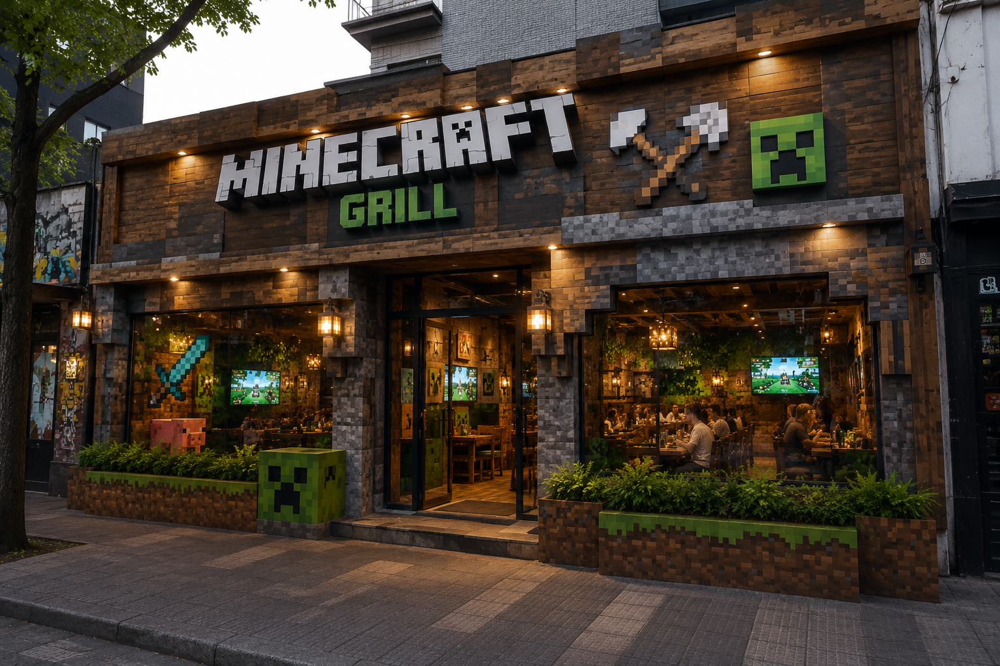

Historia
MINECRAFT GRILL nació como un restaurante inspirado en las brasas, los mercados nocturnos y las cocinas abiertas. La idea fue crear un lugar donde cada mesa pudiera ver, oler y escuchar el ritmo de la cocina.
El salon combina madera oscura, metal y luces calidas para lograr una experiencia tematica urbana. Nuestra propuesta une platos clasicos de parrilla con recetas actuales, pensadas para compartir.